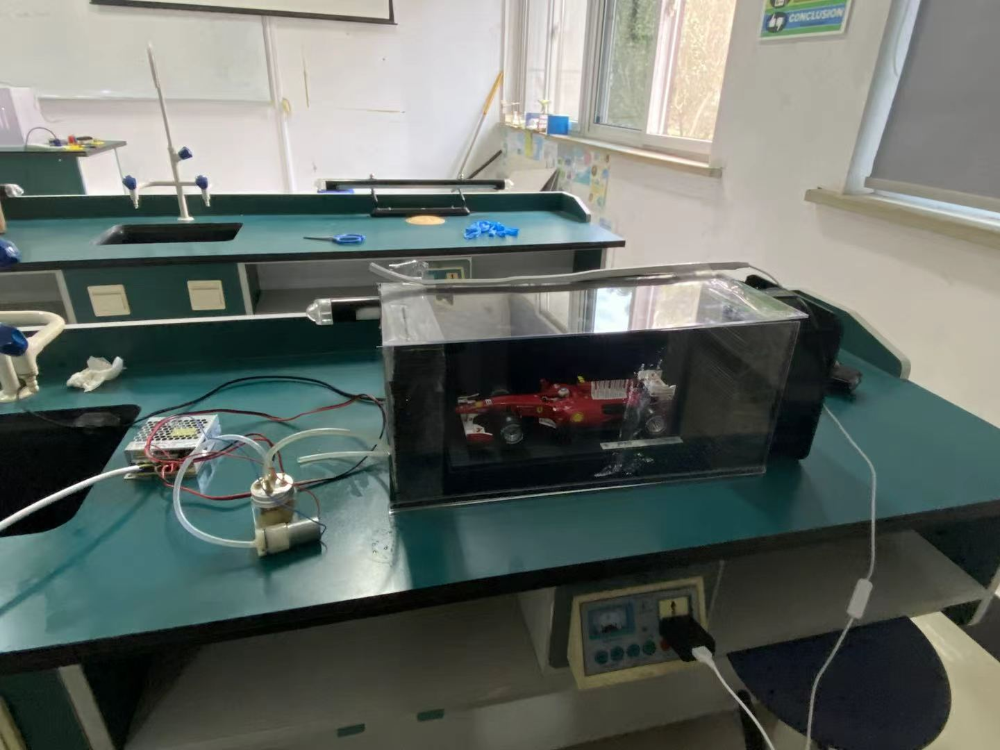

Explorer Behind the Camera & Aspiring Engineer
Hey, I'm Leo. I go to Shanghai Maple Leaf International School. My family likes to call me the "explorer behind the camera" — I'm always the one taking photos at trips or parties, trying to catch those little moments that actually mean something. Sometimes I spend way too much time editing a single picture, but hey, that's just me.
At school, my friends know me as the guy who won't freak out when an experiment fails. Like, stuff breaks all the time, but I stay calm and try to figure it out step by step. That's probably why they want me in their group projects.
The thing I'm most proud of? Winning first prize at our science fair with a wind tunnel project. Honestly, the sensors kept dying on us — super frustrating. But I read some circuit manuals, learned how to solder (badly at first), and somehow got it working. That feeling when it finally worked? Yeah, that's when I knew I wanted to keep building things. After high school, I really hope to study Engineering at UBC.
I took AP Calculus BC and AP Physics C: Electricity and Magnetism. Not gonna lie, they're tough, but I actually enjoy the challenge.

I basically ran the show for our wind tunnel project. Divided up the work: some people made models, others collected data. When our numbers looked all over the place, I figured out we needed better materials and adjustable stands. Fixed it.
This was mostly about taking photos at school events — sports day, the anniversary, you name it. But we had a problem: our posts came out super late, and the photos were meh. So I made a simple workflow: shoot, pick the good ones, edit, then review. Also taught everyone basic composition and lighting. Oh, and I made a "shooting checklist" so we wouldn't forget important shots.
I acted in a Chinese play about Alan Turing. Not really an engineer thing, but it was fun to try something different.
From 9th to 12th grade, I helped out during open days and festivals. Mostly guiding parents around and taking pictures. It's not glamorous, but someone's gotta do it.
Took a CPR/AED class. Now I know how to spot cardiac arrest and what to do. Hopefully I'll never have to use it, but it's good to know.
Things I've picked up over time.
How I work with people.
I love flying drones. Once I crashed mine pretty bad — I thought it was done. But instead of buying a new one, I spent a couple nights reading manuals and watching YouTube repair videos. Actually managed to fix it. Later, I worked with a team on a short film. We argued a lot about the visual style, so I just sat everyone down and made us agree on one direction. Worked out fine.
This started as a school project but turned into a personal obsession. I kept tweaking the design, printing new models, fixing sensors. It's not perfect, but it taught me more than any textbook could.
I want to study Engineering or Applied Science at UBC. Mechatronics or energy systems — not 100% sure yet, but something hands-on. I picked AP Calc and AP Physics on purpose, and outside of class I mess around with microcontrollers and C. I like knowing how things actually work, not just the theory.
Looking back, my biggest lessons came from things that went wrong. A crashed drone. Sensors that wouldn't cooperate. A team that couldn't agree on a short film's color tone. At the time it was annoying, but each failure taught me something — patience, logic, or just how to listen to other people.
I also learned that you can't do everything alone. The best projects happened when we actually talked to each other instead of just splitting tasks. My camera and my experiments both showed me that small details matter. I'm not the same person I was in 9th grade, and I'm kinda excited to see what university throws at me.
Got a project idea? Or just want to talk about engineering or photography? Hit me up.